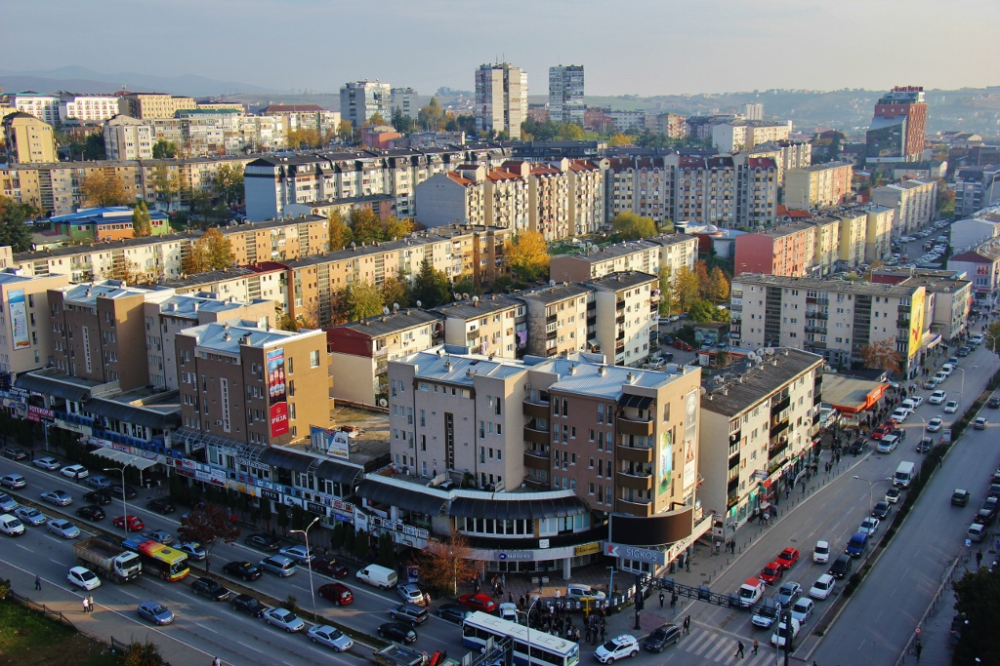

Cities
The main city of Kosovo is Prishtina which is the capital the administrative center of the country, as well. Other main cities include: Prizren, Peja, Gjakova, Mitrovica, Gjilani and Ferizaj. Main touristic attractions of Kosovo are located in the West and South of Kosovo such as the Rugova Gorge in Peja, Peja, Decani Kullas, and Decani Monastery, Gjakova and its old part of the town and the 16th century mosque, and Prizren with its beautiful castle, Bistrica river, and other historical and religious monuments.
Prishtina
The largest city and the capital of Kosovo is Prishtina with a total population of more than 500,000. Prishtina is the cultural, economical, and administrative center of the country with a long history on its locality. Archeological discoveries that have been originated are believed to date back as long ago as the Neolithic ages. The Ulpiana area of Prishtina is located in the southeastern part of the city and is believed to have been the center of the Illyrian province of Dardania. The Ulpiana area has been founded in the 2nd century while Emperor Trajan was in rule and it was renewed when Justinian was in rule in the 6th century.
In accordance with the captions regarding the monuments from Ulpiana, it is evident to have been considered among the Illyrian Dardania’s most beautiful cities. Various articles including, weapons, coins, jewelry, ceramics and such have been discovered; many of such articles are exhibited in Prishtina’s own Museum of History of Kosova.
Up until World War II, Prishtina simply appeared as an oriental town before becoming the capital city. The oriental appearance, however, was entirely changed as the intensive modernization of the city of Prishtina in the period of socialist Yugoslavia had wholly altered the city’s structure including the destroying of the city’s “Old Çarshia” or shopping street along with most of the 18th and 19th century city buildings being replaced with new ones. The old and narrow cobble stone streets along with houses that were made of mud existing at the time were replaced with wide streets, attractive tall buildings, and new modern complexes including the Radio Station, the Press and Publishing Hall, the Television of Prishtina, the Assembly Building, the University Library, various Banking centers, and more.
Prishtina is the main high education center for the country of Kosovo while it is home of the Academy of Arts and Sciences in the country where the most important intellectuals are gathered. Prishtina is also home to the Institute of History and the Institute of Albanology as well. The NEWBORN sculpture is too located in Prishtina, along with the Mother Theresa Statue, and numerous other historical momentums such as mosques, churches, museums and such.
The trendiest areas of Prishtina include the Qafa locality (the neck) which is near the city center, Sheshi-Mother Theresa Boulevard, and Kurrizi (the spine) which include various cafés and other hangout centers, shops, which are open in tunnels that are built among buildings that are residential,. The beautiful city of Prishtina exposes and endures all four dissimilar seasons of the year. The summer season is the most entertaining and thriving period of the year in Kosovo where all of the city’s energy and beauty is revealed. As you walk along the streets of the city during the summer, you will find yourself among many cages, bars, shops, and other hangout centers having fun and blistering healthy laughter and joyful locals.
Although the hotels are quite expensive, there are many reasonably priced restaurants in Prishtina that serve good food.
Finally, the city of Prishtina is known to have delicious food, friendly people, fun venues, an astonishing nightlife, and an overall great lifestyle, although it can be a bit dusty and often disorganized.
Prizren
The city of Prizren holds a total population of approximately 130,000. It is considered one of the most beautiful towns in the country and also a so-called open air museum as it has best preserved the architectural physiognomy of the past among s the other cities. The city is located among the Sharr Mountains and on the Bistrica river banks. This city which has residential houses built below the Kalaja(Fortress) brings out special curiosity as a result of its preserved culture. It is loaded with dwelling houses and quarters that possess balconies facing their gardens full of plant life. It also possesses many narrow and winding roads and streets that are perceived to cut the entire city up while giving it an oriental physiognomy.
The city of Prizren is rich with craftsmen that are famous for their astonishing silver and gold articles, the “Prizren cloths”, embroidery, various folk handcrafts, and other trading articles which that been preserved among Prizreni people throughout centuries. Much effort has been given to preserve the ancient architecture of Prizren although it has developed into a modern citysince the end of World War II, in many aspects including textile, pharmaceuticals, the metal and food industries, and such. The city of Prizren was established as a significant trading area and suitable locality as it possessed many old roads which connected the Adriatic coast and the interior side of the Balkan Peninsula.
Kalaja e Prizrenit overlooks the city of Prizren, on a hill that dominates the plateau of the city. This fort is known to exist since the 11th century which was built to protect the city from exterior attacks. The Kalaja of Prizren is a true maze of underground tunnels. It was occupied in year 1455 by the Ottoman Turks where they kept their soldiers for centuries in a row. Currently, the Kalaja fits into the setup of the old city.
The oldest monument of Islam in the city of Prizren is the Bajrakli Gazi Mehmet Pasha’s mosque. It is known to have existed since the year 1561 as its inscription affirms. The layout of this mosque includes numerous small windows and a square base. A hexagonal mausoleum (medresa) was built in the courtyard of this mosque which is where Mehmet Pasha assigned his grave.
Another mosque, Sinan Pasha’s mosque, was built in year 1615, again, according to the inscriptions. The architecture of this mosque demonstrates compactness, strength, and elegance, as it represents uncommonness in Islamic art as a result of its type of architecture. This mosque dominates among the surrounding side of town on account of its position and substantial property. The great dome of the mosque is built-in into building’s square mass with its interior being decorated with draperies, still life, and geometrical designs and walls painted with light colors.
On the other side you have the St. Maria Levishka Church is one of the oldest standing buildings in the city of Prizren. This church was originally built as a Roman Catholic Church which is also one of the chief churches of the region’s Catholics which was afterwards transformed to an Eastern Orthodox Church.
Vushtrri
Vushtrri is a city that was once known to be a Roman city by the name of Vicianum and thrived with a great economy and culture at that time. Once the Roman Empire fell, the city was under Byzantine rule.
In the 14th century, the Ottoman Empire expanded into the Balkans and eventually into Vicianum, where it spread the religion of Islam which then lead to the creations of mosqueas, madrassa’s (educational institutes) and hamams (public baths). During Ottoman rule, Vushtrri became one of the most important administrative military districts of the Ottoman Empire as well as one of the largest settlements.
There are two main monuments of Vushtrri that are both unfortunately left to a not-so-great state of standing today: the Vushtrri Castle and the nine-arched bridge over the Sitnica River that were both built in the 14th century. The castle was once home to the Brankovic ruling family as vassal of the Ottoman sultan.
Vushtrri went from one of the most important towns of Kosovo, to just another city when the migration of Turks to Turkey began after the Ottoman Fall when Kosovo was included into Yugoslavia. Turks were demanded to leave Kosovo and so along with the Turks, left most of Vushtrri’s economic and intellect elite.
With the great past that Vushtrri has had, it’s unfortunate to say that most of these monuments of objects of its past are in ruins due to the roundabout turn of Vushtrri’s importance as a town.
Gjilan
Gjilan isn’t much of a historical city but it is very welcoming with its bars and cafés, and of course, the friendly people, young people even more. A history of Gjilan explains that the city, much like Gjakova, once had upon some of the most well-profitable factories: that of the battery, the textile, the tobacco, and the radiator factory. The textile company is now abandoned and the tobacco company shut down due to the global crisis, leaving only the radiator factory to continue furnishing now two-thirds of the Kosovo market.
In 1830, there was a great fire that Gjilan suffered greatly from, leaving only the mosque to be dated before that time. All other monuments were dated afterwards; hence it is not much of a historical city. The surviving mosque is known as Xhamija e Medreses and it dated back to the 14th century. One of the interesting forms of the mosque is that it has separate doors for both genders. As well, there is a Serbian Orthodox Church named St. Nicholas Church which was first built in 1861. The Church was built by a Greek architect who used much Byzantine style one it, like most other monuments in Kosovo.
Gjilan populates to about 133,000, home to more than 12,000 Serbs, who mostly live in the surrounding villages. Getting to Gjilan, from Prishtina, will be a beautiful car ride, especially when passing the dam of Badovc which provides most of Prishtina with water. It gives a great view and is worth a visit during the spring, where you will see many people picnick along the side of the lake, and it is a great pit-stop before hitting the cafes of Gjilan.
Rahoveci
Your first Kosovo-made wine in Kosovo will most likely be from Rahovec. At least, that’s what their most known for so it only makes sense. Every September and throughout October, you will see a “market” of bargained prices grapes (tasty for sure) lining up to the side of the roads that can be used for wine production, the famous Albanian raki (home-brew) and of course, mere consumption. There is a wine festival every second Thursday of September in Rahovec that include traditional costumes, wine tasting and the exposition of the products of Rahovec. Don’t forget to visit the Stonecastle Vineyard while in Rahovec. It is the biggest vineyard home to all Stone Castle wine productions of Kosovo, and it is a beautiful sight.
Apart from the delicious grapes and wine, one of the most valued architectural monuments in Rahovec is the Halveti Tekke, next to a large Arab-style mosque. The tekke is more than 350 years in age. In the courtyard of the tekke you can find three extraordinary things: the graves of the great of tekke’s past, a 400 liter Roman-style pot which is called a pitos used mostly to store wine and grain in, and and old stone of which the inscriptions on it date back to Roman times. The stone’s inscriptions mainly suggest that wine must have been around during that time as well in Rahovec since it points out the decorative vines.
Rahovec dates back to Roman times since many Roman objects and artifacts have been found in the area, therefore it is worth taking a visit to.
Mitrovica
Mitrovica’s population rounds to about 120,000 when including Mitrovica, and North Kosovska Mitrovica that is made up of Zvecan, Leposavic and Zubin Potok. Mitrovica remains with the most mixture of Serb and Kosovar ethnicities divided by the bridge over the Ibar River. In North Kosovska Mitrovica, the majority of the population is Serb and consists of the most important educational, health, and political centers for the Serb minorities in Kosovo. The region of Mitrovica is divided by two major features: the Ibar River, as mentioned above, and the riches in mineral reserves, which lead to the ruins of industrial Trepca. Mitrovica has been spotted in the headlines since the times of conflict during 1999 as the most troublesome city due to its dividing of the ethnicities, symbolized by the bridge that runs over the Ibar River.
The name Mitrovica came to be through a patron saint known as St Dimitrus. St Dimitrus was a saint of the church in Mitrovica built in the 8th century on the lower slopes of the Zvecan Castle. The name of the place turned to Dmitrovica and thus then became Mitrovica.
The castle is historical landmark which doesn’t quite seem as a castle from afar, but if you get the change to cross the bridge, it’s a worthwhile to see.
Although Kosovo is conflict-free, Mitrovica is known to be with the most tension within ethnicity, so if you’re visiting, a head’s up is to speak Albanian in the southern part, and speak Serbian in the northern part because people may still be emotional to the tension. If neither, then English will do the job better.
Gjakova
Gjakova, another main city, lies between the borders of Peja and Prizren. It too, is well known for its historical monuments that include the mosques, Ethnographic museum, bridges, madrasa and more. Whats even more, is that the cost of your touristic stay in Gjakova will be a little less than most of the other main cities.
The current population in Gjakova counts to around 60,000 and most of which are Albanian. Although a little smaller than Prishtina, Peja and Prizren, Gjakova has equal importance especially when considering matters back during the Yugoslav times. Why? In that time, Gjakova swas known for producing the elite group of Albanian-Kosovar’s representing the then-autonomous Kosovo in the Yugoslav parliament. Outside of Prishtina, it was the only place that had an airport, a medical school, a district heating facility etc. It was thought of as the city that carried the basis of nationalism throughout Yugoslav times because it always had a small Serb population and was home to many Albanian activists.
Disregarding the fact that the majority of Albanians are Muslim and Gjakova’s population is Albanian, it can come as a surprise to understand that it is among the diverse cities when speaking of religion, especially when considering that more than 20% of the population is Catholic.
Gjakova was famous for its artisans guilds who clubbed together to build bridges and its strong leather industry.
Peja
The city of Peja is located along the Bistritza River, the entrance of the Rugova Gorge, and at the foot of the Albanian Alps known as Bjeshket e Nemura. The city of Peja holds a total population of around 80,000 and it is one of the chief cultural and economic centers of the northern region of Kosovo known as the Dukagjini region. Peja is considered one of the best touristic regions in the country due to its outstanding position and natural attractive sights of the mountainous hinterland and its wealthy supply of historical and cultural monuments.
During the medieval Serbian state, Peja was a cultural center because of the Patriarchate of Peja, which is in the immediate area of the town. With the arrival of the Ottoman Turks, Peja developed under the influence of oriental architecture which included cobble stone streets, numerous brooks in courtyards, small shops, and, of course, mosques. The urban architecture of the Turkish period is interesting, with a large number of preserved houses of Albanian feudal lords, among which is the famous Tahir Bey’s Palace, and Jashar Pasha’s House.
The Sheremet Tower, although built during the Turkish rule, in fact is a true type of an Albanian Dukagjin tower, a stone house with small windows. The ceilings of these types of houses are tall, usually in carved wood, with niches. The houses are surrounded by tall walls and have well kept gardens.
In the center of the town is the old Charshia (shopping street), with shops of various craftsmen (coppersmiths, goldsmiths, slipper makers, leather tanners, saddle makers, tailors, etc.). The attractive Bajrakli mosque built in the 15th century ranks among the older structures of Islamic architecture.